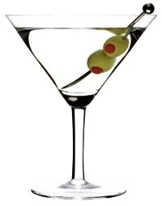

The Martini
The martini conjures up images of James Bond, and sophisticated cocktail parties. Pure elegance and style in liquid form. Of course we are discussing the Gin Martini, that other one need not be mentioned.
We need only two ingredients: an excellent gin, and a dry vermouth. The better the gin, the better the martini.
The ratio of gin to vermouth can vary wildly from 1:5,favored by Julia Childs, to 1:(glance in the direction of France), favored by Winston Churchill.
A good starting place is 3:1. This gives the vermouth a chance to augment the flavor of the gin without overpowering it.
The recipe itself is stunningly simple.
The Martini
- 3 oz. your choice of gin
- 1 oz. your choice of Dry Vermouth
- Some number of green olives for a garnish
- ice
- cocktail glass, chilled
- cocktail shaker
- bar strainer
- In a clean cocktail shaker filled with ice, add liquid ingredients.
- Shake until well chilled.
- Strain into chilled cocktail glass.
- Garnish with olives.